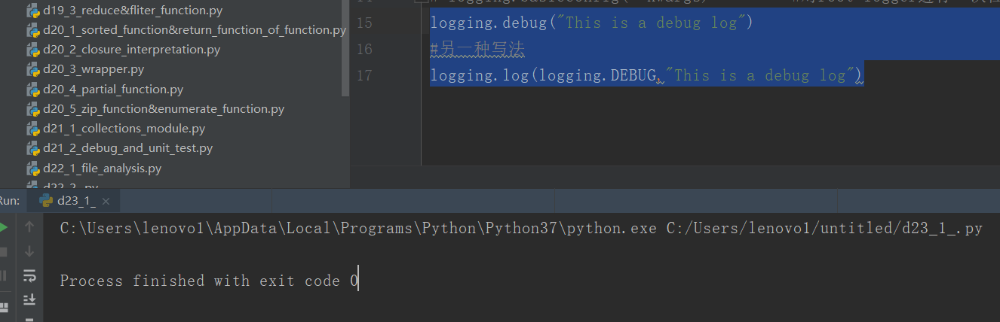

原文连接:https://www.cnblogs.com/ruigege0000/p/11267410.html
一、log
1.推荐网站：https://www.cnblogs.com/yyds/p/6901864.html
该网站为日志处理logging模块简介
2.logging模块提供模块级别的函数记录日志，包含四大组件。
3.日志的级别
（1）不同的用户关注不同的程序信息
（2）分级：（级别从小到大，越到后面越严重）DEBUG\INFO\NOTICE\WARING\ERROR\CRITICAL\ALERT\EMERGENCY
（3）I\O操作不要太频繁
（4）Log的作用：
i.调试；ii.了解软件的运行情况；iii.分析定位问题
（5）日志信息
i.时间；ii.地点；iii.level；iv.内容
（6）成熟的第三方日志(多种模块可用)
log4j\log4php\logging
4.logging模块
（1）日志级别（用户可自定义）
DEBUG\INFO\WARING\ERROR\CRITICAL
（2）初始化\写日志实例需要指定级别，只有当级别高于或者等于指定级别才会被记录
（3）使用方式
直接使用logging（封装了其他组件）；logging四大组件直接定制
5.logging模块的级别的日志
使用下面几个函数
logging.debug(msg,*arg,**kwargs) #创建一条级别为DEBUG的日志
logging.info(msg,*arg,**kwargs) #创建一条级别为INFO的日志
logging.warning(msg,*arg,**kwargs) #创建一条级别为WARNING的日志
logging.error(msg,*arg,**kwargs) #创建一条级别为ERROR的日志
logging.critical(msg,*arg,**kwargs) #创建一条级别为CRITICAL的日志
logging.log(level,*arg,**kwargs) #创建一条级别为level的日志
logging.basicConfig(**kwargs) #对root logger进行一次性配置
logging.basicConfig(**kwargs) 对root logger进行一次性配置
只有在第一次调用的时候起作用
不配置logger则使用默认值
i.输出：sys.stderr
ii.级别：WARNING
iii.格式：level：log_name:content
（2）例子
logging.debug("This is a debug log")
#另一种写法
logging.log(logging.DEBUG,"This is a debug log")

二、源码
d23_1_log.py
地址：https://github.com/ruigege66/Python_learning/blob/master/d23_1_log.py
2.CSDN：https://blog.csdn.net/weixin_44630050（心悦君兮君不知-睿）
3.博客园：https://www.cnblogs.com/ruigege0000/
4.欢迎关注微信公众号：傅里叶变换